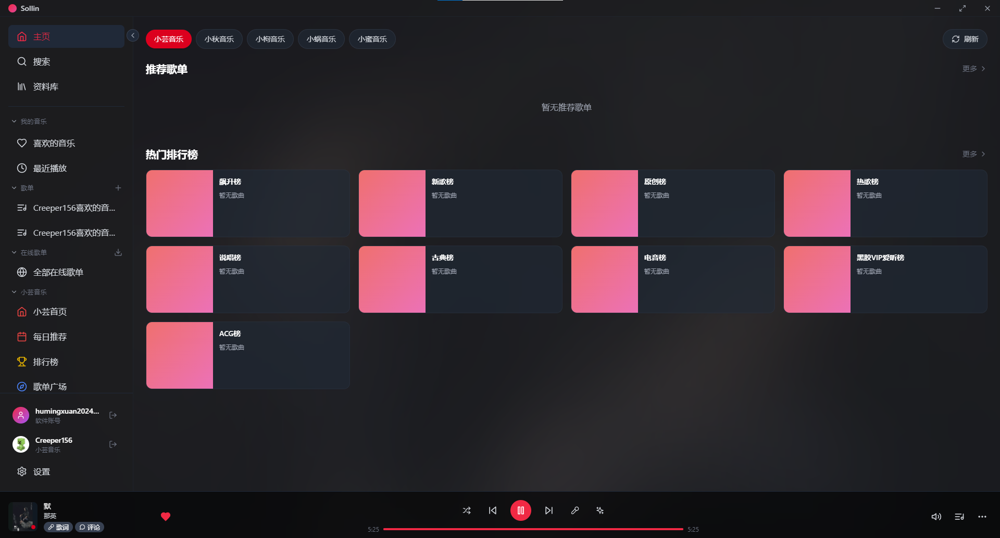

🎵 你的听歌是否被版权、付费、界面臃肿充斥着？使用Sollin即可解决！
✨ 视频介绍
视频传送门：https://www.bilibili.com/video/BV1wHrSB2E4R/
🚀 下载与安装
首先，进入 Sollin官网！ 如果你使用的是手机版，教程可忽略，请直接跳转到下面！
点击右上角下载按钮，选择对应的操作系统，点击下载。
安装完成后，打开Sollin，你就可以看见如下界面（因为我截图的时候未联网，所以界面有些问题）：

tips:如果您是点击“下面”跳转的，那么下面就是跳转内容！
💡 当然，如果你有能力就尽量支持正版哟！
仅有手机端可以下载歌曲，下载歌曲仅供学习使用，请勿商业使用。
下载的歌曲请在24小时内删除！
如果下载出错，很有可能您的今日下载额度已用完，需次日或赞助后才能下载（赞助仅会增加额度，并不代表可以一直下载！）
如果出现问题，请加Soliin官群（见官网，有QQ群或telegram群）或进入GitHub仓库的issues求助！